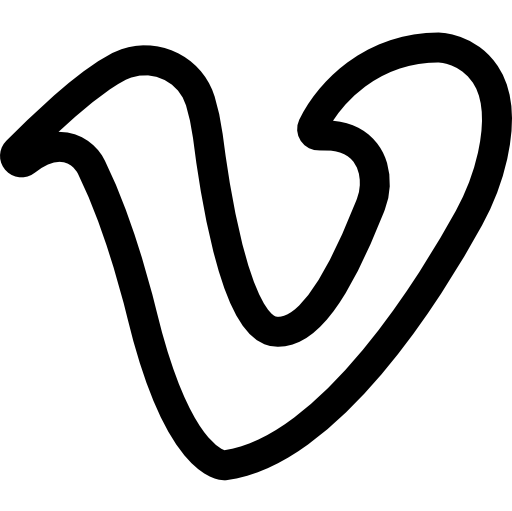
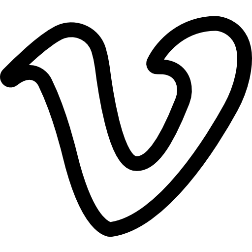
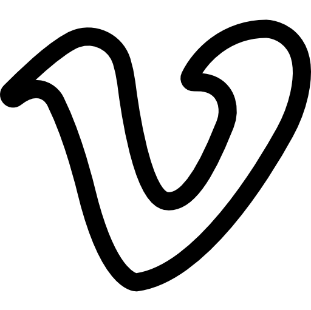

Social Networks
 

 Email account: mustafinaa550@gmail.com
Email account: mustafinaa550@gmail.com
Instagram account: justtaminka
VK: Amina Mustafina
Telegram account: Aminoka
Let me introduce myself, my name is Amina Mustafina. I was born in the 16 th of July, 2003 in Karaganda, which is the town of Kazakhstan.I am seventeen and now I am studying at university. I’m usually calm, but sometimes I can lose my temper and become either angry or sad. I like to laugh and joke. I have got a sense of humor. Also, I have a big family. We are a family of six. There are my parents and sisters.I study well. My favorite subjects are English, Web technologies and others. I want to learn Spanish and French too.
Social Networks

Email account: mustafinaa550@gmail.com
Instagram account: justtaminka
VK: Amina Mustafina
Telegram account: Aminoka
| Hobby | |
|---|---|
| Cooking | I have never learnt how to cook. I just watched my granny and my mom cooking and I always wanted to help them. My parents are happy I have this hobby and my dad says my husband will be a lucky man. |
| Swimming | The first reason that I love swimming is that it can be extremely relaxing. I love the feeling of floating on the water and feeling almost weightless. I find that whenever I leave the pool I feel totally relaxed. |
| Sleeping | It doesn't make me lazy or inactive or uninteresting. I am just sleepy and I love the feeling of cuddling up in my perfectly cushioned bed. I love the feeling of wrapping a blanket around me, the TV and fan blocking out the noise from the outside world and creating a world of my own sound within my four walls while I drift into sleep. |
| Athletics | My most favourite hobby is athletics,but I do it for 5-6 month. I went to school athletics competitions at first and after that I started to go to training.Unfortunately, I had to leave because of my health. |